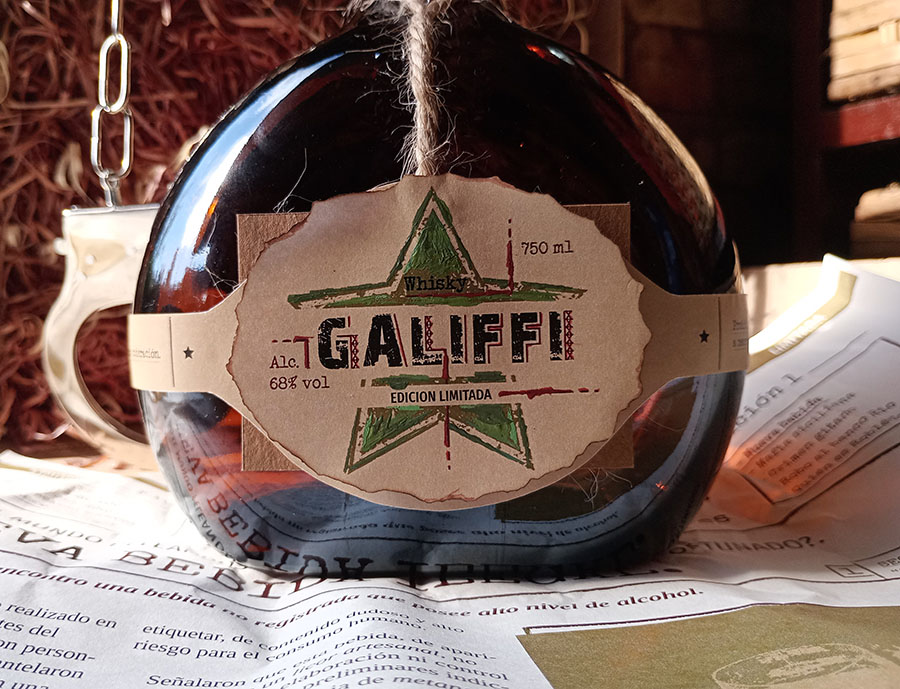

- Diseño Grafico
- +54 1166004130
- 22 Años
- Argentina
- Lomas de Zamora


- Diseño Grafico
- +54 1166004130
- 22 Años
- Argentina
- Lomas de Zamora
Hola! Soy Orne, y me considero una persona curiosa, responsable, comprometida y con una fuerte sensibilidad visual. Me motiva transformar ideas en soluciones creativas que comuniquen con claridad y personalidad. Me gusta trabajar con dedicación, escuchar distintas perspectivas y sumar desde el respeto y la iniciativa.
ESTUDIOS
Secundaria
- Escuela San José
- Bachillerato en Contabilidad
- 2015 - 2020
Universidad
- Universidad de Lanús
- Diseño y Comunicación Visual
- 2021 - Actualidad
EXPERIENCIAS
Diseñadora Gráfica Jr.
- Gráfica Nexbel
- Aprendiz
- 2022 - Actualidad
Emprendedora
- Diseños e Impresiones
- Stickers y Fotografías
- 2024 - Actualidad
HABILIDADES
Herramientas
- Illustrator
- InDesign
- After Effects
- Figma
- Lightroom
- Photoshop

¡Escanea y descarga mi CV!
PREFERENCIAS
- 1. Diseño Editorial
- 2. Diseño Web
- 3. Ilustración
IDIOMAS
- 1. Español
- 2. Inglés
- 3. Portugués


"REVISTA EXPLORACION LUNAR"
Diseño Editorial - 2024
Este trabajo editorial se trata de una revista científica en donde se presentan datos estadísticos e informativos acerca de la exploración lunar hasta la actualidad. Trabajo realizado para la materia Espacio Tipográfico III, usando las herramientas Adobe Illustrator y Adobe InDesign.
SALIR"RAICES INDUMENTARIA"
Branding - 2025
Diseñé el branding para una línea de ropa de lino, enfocada en prendas playeras de verano, livianas y cómodas. La identidad conecta con nuestras raíces, transmitiendo frescura y naturalidad a través de colores y elementos visuales que reflejan un estilo veraniego y auténtico. El trabajo fue realizado utilizando Adobe Illustrator,aprovechando sus herramientas para crear gráficos vectoriales precisos y versátiles.
SALIR"MONOGRAMA PARA MARCA PROPIA"
Branding - 2025
En este proyecto diseñé un monograma con mis iniciales (O, I, N) para representar mi marca personal. Busqué un símbolo visual único, armonioso y versátil, trabajando con diferentes tipografías hasta lograr un diseño limpio. Lo realicé en Adobe Illustrator, asegurando calidad y escalabilidad para su uso en diversos formatos. Este trabajo reforzó mis habilidades en software y en principios de identidad visual..
SALIR"AFICHES RED TEATRAL SUR"
Diseño Publicitario - 2023
Junto a mi compañera Ornella Monticello, creamos una serie de cuatro fichas para la Red Teatral Sur: tres afiches de obras diferentes y uno general sobre teatro. El trabajo se realizó mediante fotografía y diseño, utilizando Photoshop e Illustrator para lograr una comunicación visual clara y atractiva que refleje la esencia de cada obra y del grupo teatral.
SALIR"CRONOGRAMA FASHION WEEK"
Diseño Editorial - 2024
Cronograma de actividades para la Fashion Week 2024 de la temporada Primavera Verano. Trabajo realizado para la materia Espacio Tipográfico III, usando las herramientas Adobe Illustrator y Adobe InDesign.
SALIR

"ETIQUETA WHISKY GALIFFI"
Diseño de Packaging - 2025
Diseñé una etiqueta para un branding completo de una bebida de whisky, inspirado en la película Snatch, Cerdos y Diamantes. Utilicé Adobe Illustrator para crear un diseño que capture la esencia audaz y dinámica de la película, reflejando el carácter único y sofisticado del producto.
SALIR